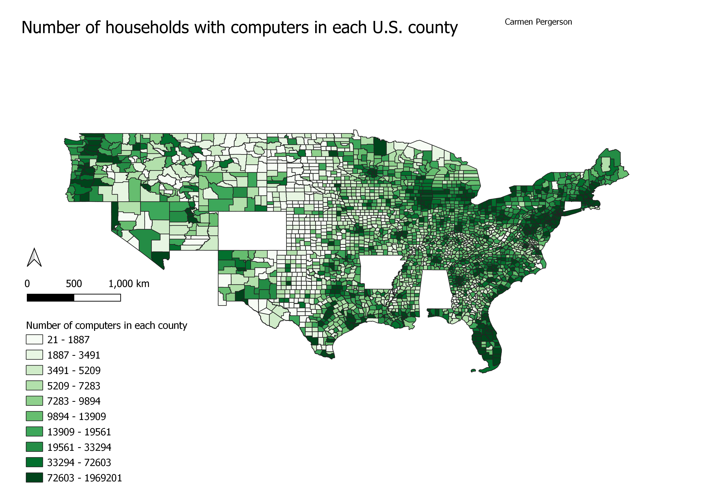

HW 7
To access my data for this map I went to "SimplyAnalytics.com", sorted by counties in the U.S., chose the technology tab, then picked "the # of computers in households 2021" dataset.
This is a map categorized by Equal quantile. The map displays the amount of household with computer per county in each U.S. county. For some reason a couple of the state are completel whited out, I belie this is because there was insufficient data for these states. I added a north and a scale to my map, but to display this information specifically it is not necessary, because the direction or size does not effect the information.
Number of Computers per American Household

Data used for this project
Number of computers per household CSV